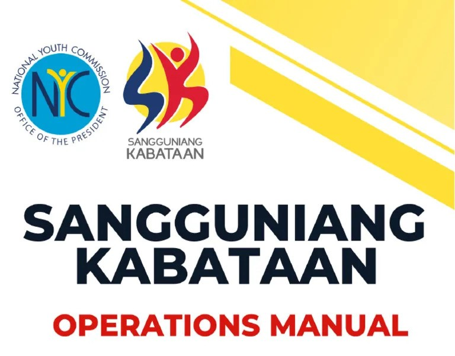

City of Pura-Tarlac
SANGGUNIANG KABATAAN
sa RILES, serbisyo'y MABILIS!

Our mission at the Sangguniang Kabataan (SK) is to serve as the governing body representing the youth assembly, Katipunan ng Kabataan, within every barangay. Elected by the members of the Katipunan ng Kabataan through COMELEC-conducted elections, we are committed to advocating for the interests and welfare of the youth. Our vision is to empower the youth to actively participate in local affairs and community development. Through fostering a culture of leadership and civic engagement, we aim to nurture a generation of responsible and proactive young individuals dedicated to driving positive change in their communities.
Core Values
The Sangguniang Kabataan is guided by the values of integrity, unity, excellence, empowerment, respect, responsiveness, and sustainability, ensuring principled and effective leadership for the youth sector within the barangay.
Responsibilities
The Sangguniang Kabataan serves as the governing body of the youth assembly or Katipunan ng Kabataan in every barangay in the Philippines. Its members are elected by the youth members of the Katipunan ng Kabataan through elections organized by the COMELEC.
History
The Sangguniang Kabataan (SK) was established in 1991 as a result of the Local Government Code of the Philippines. It was created to give the youth a voice in local governance and to promote their active participation in community affairs. The SK replaced the Kabataang Barangay, which was abolished during the administration of President Corazon Aquino.